組織においては、3D CAD データに直接関連しないチェックの一部を設計者が実行する場合があります。しかし、このようなチェックはより重要であり、部品やアセンブリの設計中に設計者自身が実行すべきものです。「マニュアルチェック」を DFMPro フレームワークに統合することで、設計者向けの共通チェックリストと単一のレポートを実現できます。
DFMPro のマニュアルチェック機能は、CAD ジオメトリに依存しないチェック（例：図面関連チェック、標準順守チェック、テンプレート関連チェックなど）を実行するためのフレームワークを提供します。これらのチェックを標準の「DFMPro_Manual_Check.xlsx」で構成すると、すべてのチェックがルールファイル内の独立したルールとして利用可能になります。設計者はそれらのルールを選択して DFMPro 解析を実行できます。実行中、DFMPro はマニュアルチェックダイアログボックスを表示し、ユーザーは実施済みであることを示すチェックを選択できます。
DFMPro のインストール中に、マニュアルチェック用の「DFMPro_Manual_Check.xlsx」ファイルが DFMPro データベースの場所に作成されます。
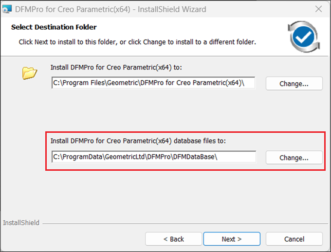
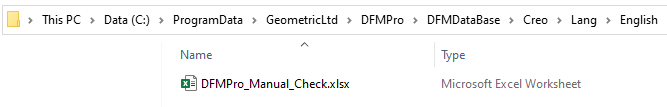
DFMPro のインストールが正常に完了すると、マシン上にマニュアルチェック用の環境変数「DFMPRO_MANUAL_CHECKS」を作成できます。この変数は、DFMPro_Manual_Check.xlsx が配置されているディレクトリを指します。
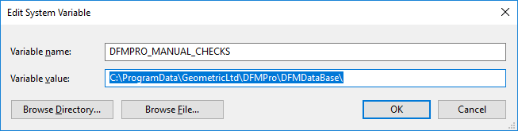
変数名 – DFMPRO_MANUAL_CHECKS
変数値 – 「DFMPro_Manual_Check.xlsx」ファイルが配置されているディレクトリパス
注記:
既定の場所を変更した後、または共通のネットワーク上の場所からファイルを読み込む場合、組織はこの変数を使用して場所を定義する必要があります。
変更後の場所は、以下に示すように、DFMDataBase フォルダ以降のディレクトリと同一のフォルダおよびサブフォルダ構造を維持する必要があります。
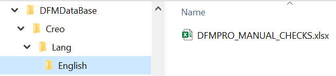
DFMPro_Manual_Check.xlsx テンプレートでは、SME が以下の情報を定義して、ルールマネージャーにマニュアルチェック用のルールを追加できます。
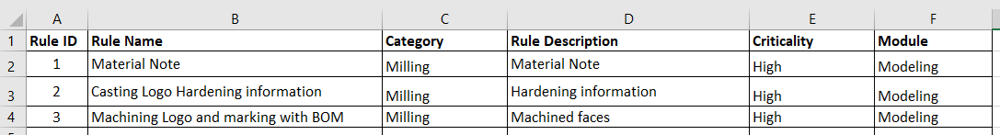
ルール ID – DFMPro が内部的に使用し、DFMPro ルールマネージャーに名称を追加するために用いられます。
ルール名 – ルールマネージャーに表示される名称です。
カテゴリ – マニュアルチェックのカテゴリ（例：Milling、Sheet Metal、Injection Molding、Assembly など）。
ルールの説明 – マニュアルチェックルールに関する情報を提供します。
重要度 – マニュアルチェックの重要度を定義します（例：Critical、Low、High、Medium、Insignificant）。
モジュール – 3D CAD パーツに対して実行するために必要なモジュール（例：「Modeling」）を選択します。
注記:
上記形式で Excel ファイルに追加・保存されたマニュアルチェックのみが、DFMPro ルールマネージャーに追加されます。
マニュアルチェックの構成が正常に完了すると、すべてのチェックは DFMPro の 3D CAD チェックと同じ方法で DFMPro ルールマネージャーに追加されます。
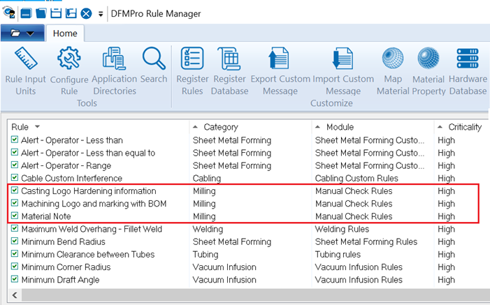
設計者は、3D CAD チェックと併せてルールマネージャー内で「マニュアルチェック」を選択し、ルールファイルを保存できます。
注記:
「マニュアルチェック」機能を使用するには、Microsoft Excel アプリケーションが必須の前提条件となります。
設計者はルールファイルを参照し、DFMPro 解析を実行できます。
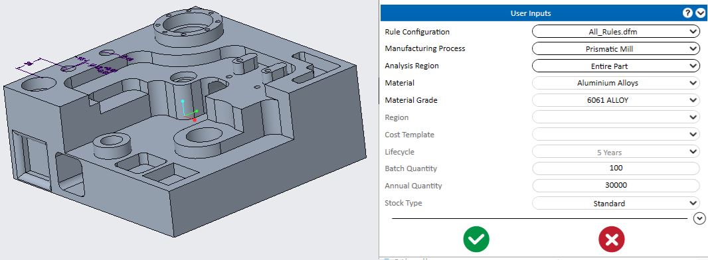
ルールファイルを参照します。
Run ボタンをクリックして DFMPro の実行を開始します。
解析中に、必要なマニュアルチェックを選択できるマニュアルチェックダイアログボックスが表示されます。
OK ボタンをクリックして DFMPro 解析を続行します。
DFMPro の実行が正常に完了すると、実施されたマニュアルチェックはルール一覧に表示され、実施されていないチェックは「推奨事項」に表示されます。
Notes に追加された情報は、Excel レポートに表示されます。
注記:
マニュアルチェックテンプレート「DFMPro_Manual_Check.xlsx」において、既存のルールに新しい変更が加えられ、ルールファイルを保存せずにルールを実行しようとした場合、DFMPro マニュアルチェックの実行中に、変更されたルールに対する入力ウィンドウがグレーアウトされます（下図参照）。
これを回避するには、ルールファイルを開いて保存してください。これにより、変更内容がルールファイルと同期されます。
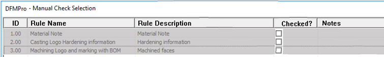
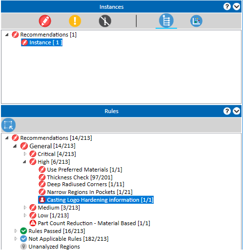
DFMPro は、マニュアルチェックルール専用の個別レポートは生成しません。ルールの合否情報は、標準の DFMPro レポートに追加されます。マニュアルチェックルールに関するすべての情報は、シート内で確認できます。
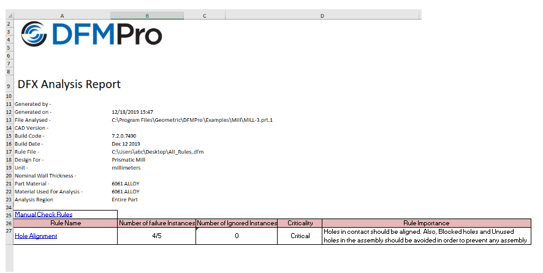
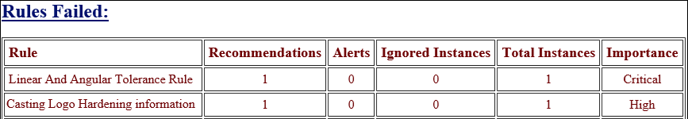
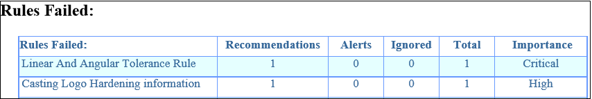
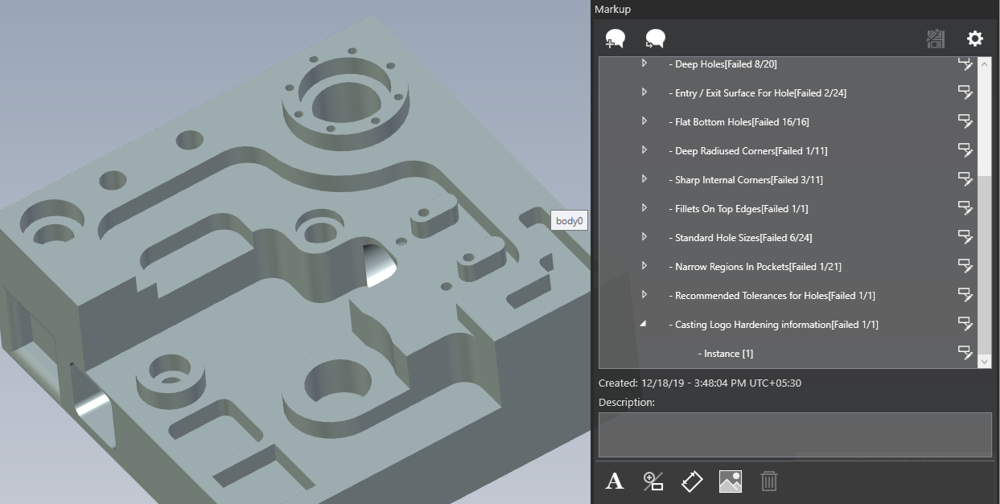